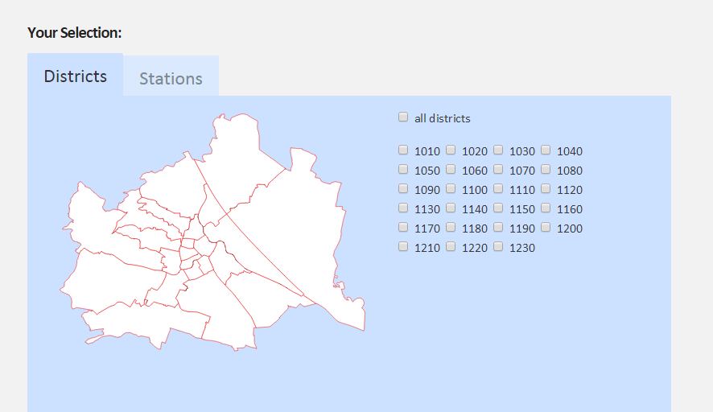
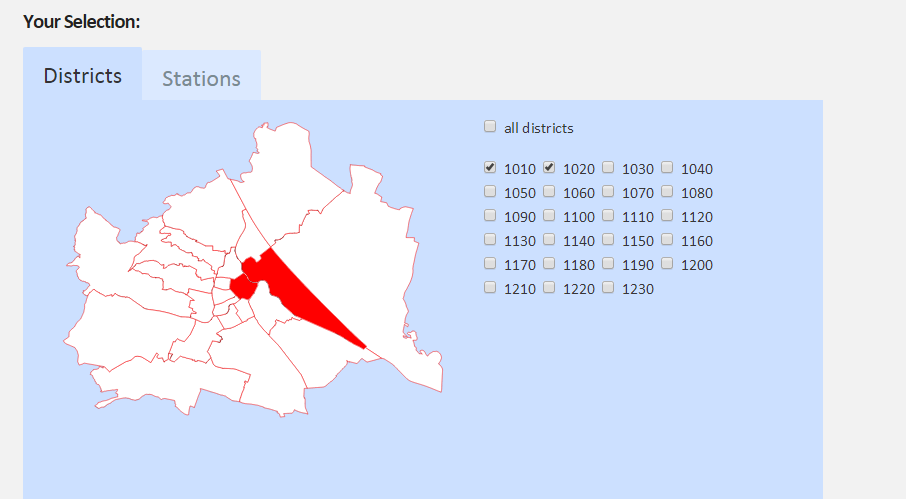
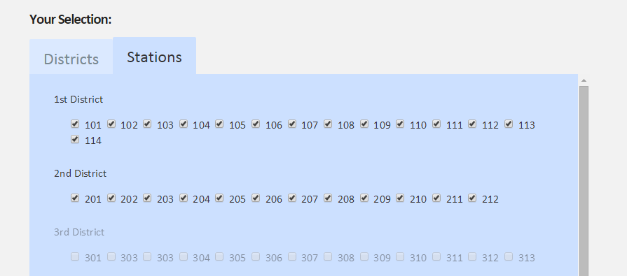
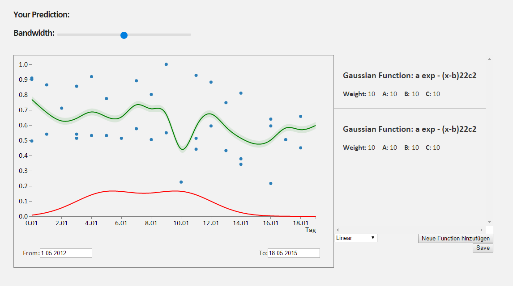
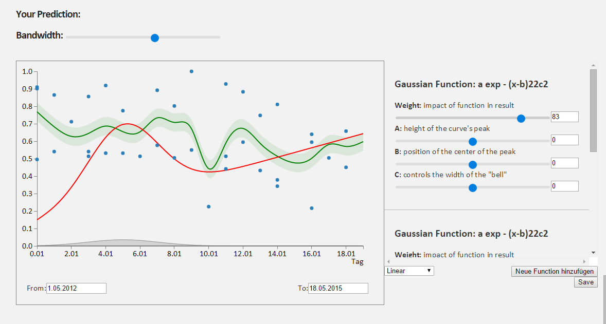
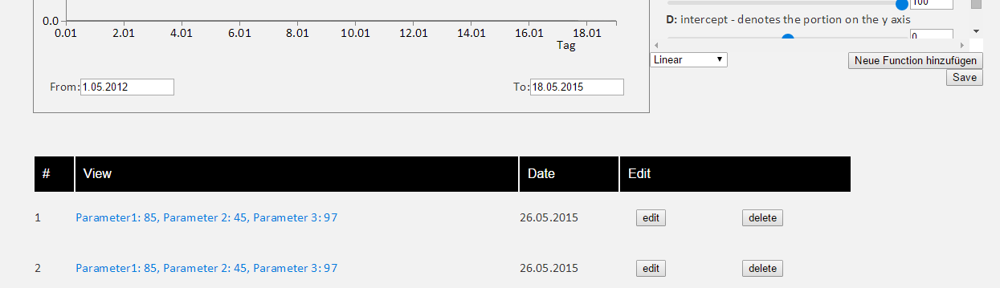

Home Project Team M1 M2 M3 M4 Project
M4: Final presentations
Very brief reminder of our problem
Our Goal is to create a tool for CityBike employees. It should enable them to forecast future usage and plan ahead. We do this by providing them with an interactive and adjustable tool visualizing historic trends of the usage.
CityBike employees can adjust the prediction line by adjusting certain parameters which in our case are mathematical functions. Users can add new functions allowing them to recreate the desired prediction curve.
Approach
After deciding to base our project on the CityBike Data we initially drew up some mockups where we wanted to visualize the routes CityBikes take or show the damages which somehow brought us to the utilization of CityBikes in general and how complicated it must be to ensure there are suffician available bikes at all stations at all times. After focusing on this issue we decided to base our project on aiding CityBike employees by showing historical usage allowing them to predict when the majority of bikes are rented for certain stations at certain times. The next concern we faced was how to exactly translate this idea into a meaningful tool. We decided to display historical data including some parameters allowing the user to create a prediction line. As time passed we chose mathematical functions to be added to the tool in order to modify the prediction line as wished such as gaussian or linear functions. As a final result we now display the historic average, outliers, the standard deviation as well als multiple sliders in order for the user to change the prediction line.Results / Presentation of your hi-fidelity prototype
This view shows a map of Vienna where one is able to select one or multiple districts:
Here is an example of a selected district:
The next tab allows you to select the districts.
This is what our initial graphs inlcuding outliers looks like where you can add functions, edit the Bandwidth and select the dates:
When you utilize the sliders the prediction line (red line) will change. We have also added the date selected to the bottom of the graph:
Once the results are saved they are saved at the bottom of the screen:
Strenghts and Weaknesses
One of our strenghts is that the tool we have creates is ver intuitiv, easy on the eye and straight forward to use. It is not only a tool handy for CityBike usage prediction but also fun to play around with.
At the moment the time and station selections are still static and hard coded. The bandwidth does unfortunately overlap with the outliers. We would have wished to be able to save the current settings and allow the user to go back to it at a later stage but unfortunately we ran out of time.